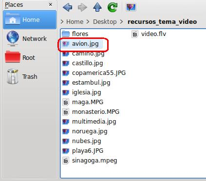
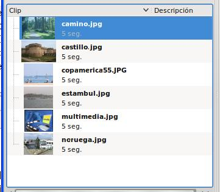
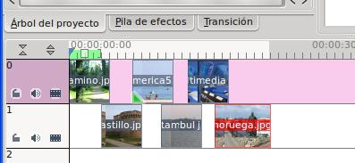
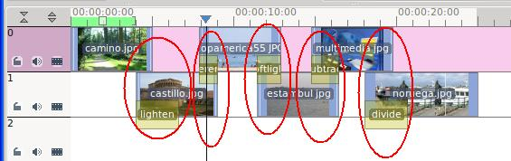

Edición de Audio y video
1.3. Generar Presentación Personalizada
Nosotros podemos generar nuestro propio clip de presentación sin utilizar el que dispone por defecto el Kdenlive.
Para ello trataremos cada imagen o foto como si fuera un clip independiente. Añadimos cada imagen al la línea del tiempo y realizamos las transiciones y efectos que estimemos oportunos.
- Entra en File / new y creamos un proyecto
- En el árbol de proyectos, añadir clip y localiza las imágenes que desees. Recuerda que cada iamgen pasará a ser un clip.

- Repite el proceso hasta añadir todas las fotos que desees.

- Ubica cada foto en las pistas que dispones. Para poder realizar las transaciones, al menos, utiliza dos pistas. Una imagen en la pista superior, la siguiente en la inferior, y así sucesivamente. Recuerda de solaparlas para poder añadir transiciones.

- Si deseas que una foto tenga mayor duración al tiempo estipulado por defecto (Settings / Configurar kdenlive / Miscelánea / clips de imagen) podemos estirar la imagen en la pista respectiva.
- Añade transiciones a tu gusto y el resultado será parecido a la que mostramos.

- Puedes agregar un clip de música si lo deseas y realizar titulaciones como hicimos en el punto 1.2.2 de este tema.
- Guarda el proyecto y exporta un fichero con la presentación.
Jo.R.C.A. 2004 - 2011

Edición de Audio y Video con Software Libre by José Ramón Cerdeira Alonso is licensed under a Creative Commons Reconocimiento-No comercial-Compartir bajo la misma licencia 3.0 España License